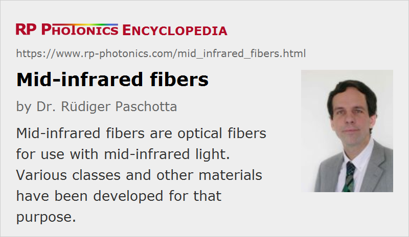

Mid-infrared Fibers
Definition: optical fibers for use with mid-infrared light
More general term: optical fibers
German: Infrarot-Fasern
Category: fiber optics and waveguides
How to cite the article; suggest additional literature
Author: Dr. Rüdiger Paschotta
Most optical fibers are silica fibers; these cannot be used for transmitting mid-infrared light, since silica is strongly absorbing for optical wavelengths above ≈2 μm due to vibrational resonances (→ multiphonon absorption). However, there are other glass materials from which optical fibers can be made which can transmit light at longer wavelengths. In other cases, crystalline media or hollow waveguides are used.
Chalcogenide Glasses
Already since the mid 1960's [1], various types of chalcogenide glasses are used, which are sulfides, selenides or tellurides e.g. of arsenic (As) or germanium (Ge) and have substantially lower vibration frequencies (thus also lower phonon energies) than silica due to the higher mass of chalcogenide ions (comparing with oxygen ions). Consequently, their infrared absorption starts at longer wavelengths:
- Sulphide glasses like arsenic trisulfide (As2S3) are suitable e.g. for wavelengths of 1 to 6 μm, but can exhibit strong absorption peaks within that wavelength range, e.g. at ≈4 μm (see below).
- Selenide glass (As2Se3) can be used up to ≈9 μm.
Extrinsic propagation losses are usually strong; for example, hydrogen as an impurity causes absorption in the region around 4 μm related to the vibration of S–H bonds, and hydroxyl (OH−) groups cause additional absorption lines. Therefore, the transmission spectra are often quite structured. The propagation losses are much higher e.g. than those of fluoride fibers (see below).
Chalcogenide glasses have a low band gap energy and are thus not suitable for guiding shorter-wavelength light. (For that reason, such glasses also look colored, e.g. orange.) Infrared fibers based on chalcogenide glass are sometimes labeled as CIR = chalcogenide-based infrared fibers. They are fairly stable, e.g. insensitive to moisture, in contrast to some other mid-IR materials.
Germanate Glasses
Germanate glasses are chemically similar to silica glasses, just containing germanium (Ge) instead of silicon (Si). An increased refractive index for the fiber core can be achieved by doping with PbO.
The transmission range extends to roughly 3 μm, to be compared with only ≈2 μm for silica. The transmission losses are of the order of 0.2 dB/m, and it is possible to transmit laser beams with more than 10 W of optical power through multimode fibers.
Heavy Metal Fluoride Glasses
Some heavy metal fluoride glasses (HMFG) can be used for mid-infrared fibers [5]. The most common one is ZBLAN, chemically ZrF4-BaF2-LaF3-AlF3-NaF. It has a loss minimum around 2.5 μm, where propagation losses of a few dB/m can be reached. Unfortunately, these fluoride glasses are rather fragile, having a failure strain which is more than an order of magnitude lower than for silica, and the fragility can further increase due to the influence of moisture. There is also a tendency for surface crystallization. The small glass softening temperature range makes it relatively difficult to draw fibers from such materials.
Variants of such glasses exist (for example AlF3-ZrF4-BaF2-CaF2-YF3) which can exhibit an improved durability, but possibly at the cost of higher propagation losses.
There are also indium fluoride fibers with improved infrared transmission at longer wavelengths.
See also the article on fluoride fibers.
Polycrystalline Fibers
Various halide materials exhibit excellent infrared transmission, but have a crystalline nature; one cannot make glasses out of them. Some of them are suitable for fiber fabrication by hot extrusion; one can press them through a die at a temperature near the melting temperature and obtains a polycrystalline structure with a grain size of the order of 10 μm. A fiber cladding can be produced in a second step with the rod-in-tube technique, or with a refined extrusion process. Silver halide fibers (the ternary alloy AgBrCl) are nowadays most common and allow transmission ranges from roughly 3 μm to 18 μm [3, 8]. In the optimum wavelength region around 8–14 μm, the propagation losses can be well below 1 dB/m. However, the propagation losses tend to increase with time due to growth of the microcrystals, possibly also due to exposure to visible light (photodarkening), which leads to the formation of silver particles. Also, excessive bending can permanently increase the propagation losses.
Thalide fibers have also been developed but are not widely used because of the high toxicity of thallium (Tl) and their inferior mechanical properties.
Sapphire Fibers
Optical fibers can also be made of the monocrystalline sapphire (→ single-crystal fibers), which is aluminum oxide (Al2O3). Common fabrication methods are edge-defined, film-fed growth and laser-heated pedestal growth, possibly followed by an annealing process for reducing the propagation losses.
The transmission range extends up to roughly 3.2 μm, and the low propagation losses and tight robustness of that material allows the use with fairly high optical average powers of more than 10 W. For example, sapphire fibers are used for transmitting the output of Er:YAG lasers at 2.94 μm [17].
Hollow Waveguides
A completely different approach is to use hollow waveguides [13, 14, 19], made e.g. of glass or sapphire [10], where most of the optical power propagates within an air core (typically a few hundred micrometers in diameter), and the light field has only little overlap with the solid materials. Therefore, substantial absorption in the used materials can be tolerated without obtaining high propagation losses for the guided light, and a very wide transmission wavelength range can be achieved. Also, end reflections are very weak. Typically, one has single-mode or few-mode propagation, which implies a high beam quality at the output, but also a high beam quality requirement for the input.
One can in principle simply use a hollow glass piece, but the performance can be optimized with additional layers deposited on the inner surface, e.g. a thin metallic layer reflecting the light, further assisted with a dielectric layer (e.g. AgI on Ag).
There are cases where the refractive index of the used solid material is below 1 at the operation wavelength, so that the operation principle of a standard fiber is effectively used; an example for this are sapphire hollow fibers for transmitting 10.6-μm light from CO2 lasers [12]. In other cases, one has leaky waveguides.
The propagation losses can be quite small (of the order of 0.1 dB/m) if the air core is made large enough. (The propagation losses in leaky waveguides are usually proportional to the inverse third power of the air core diameter.) Very high optical powers can be transmitted, often several kilowatts. Unfortunately, the losses can rise steeply when such a fiber is bent.
Hollow waveguides can also be made using plastic or metallic materials for the basic structure. The optical properties are determined by layers of other materials deposited on the inner side.
Photonic Crystal Fibers
Although most photonic crystal fibers are made of silica, research is underway on such fibers based on chalcogenide glasses, e.g., aiming at infrared transmission. Supercontinuum generation has been demonstrated [22], where one profits from the high nonlinear index of chalcogenide glasses, while the chromatic dispersion can be optimized through the photonic crystal structure design.
Typical Properties of Mid-IR Fibers
In various respects, mid-infrared optical materials are substantially less suitable for fiber fabrication than silica. For example, some of them are quite fragile and not as easily drawn into fibers. The technology for making such fibers out of ultra-pure materials is also far less developed than that for silica fibers. (Substantial investments have been made into the development of high-quality telecom fibers, which are essentially always made of silica.) Therefore, mid-infrared fibers are typically much more expensive, mechanically less robust and exhibit substantially higher propagation losses, compared with silica in its optimum wavelength region around 1.5 μm. Also, their optical damage threshold in terms of peak power or average power is often substantially lower, although some of them do allow the transmission of high-power infrared light. In some fibers, thermal lensing effects are strong due to the relatively high absorption and high dn / dT values. The refractive index of such glasses can be quite high (often well above 2), leading to strong Fresnel reflections at glass–air interfaces.
Mid-infrared fibers are available as bare fibers, but also as fiber patch cables, i.e., having additional protection and fiber connectors at the ends. Many of them are multimode fibers, either due to difficulties of making single-mode fibers or because multimode fibers are appropriate for typical applications. Hollow waveguide fibers, however, can be used for single-mode transmission.
Applications of Mid-Infrared Fibers
There are many applications where some amount of mid-infrared light needs to be transmitted through a fiber; a few examples are given in the following:
- The light output of mid-infrared laser sources (e.g., quantum cascade lasers, optical parametric oscillators or fiber lasers) often needs to be transported to some application in transport fibers. For example, high-power mid-infrared light is used for military countermeasures, i.e., for distracting heat-seeking rockets which can attack airplanes. An optical fiber with a suitable transmission band and high-power capability can be used to transport such light from the source to the optical beam collimation system.
- In other cases, infrared light needs to be transported to some device analyzing it, e.g. a spectrometer or an imaging device. In the mid infrared, there are many characteristic absorption lines for identifying chemical species.
- Evanescent wave fiber sensors are mostly based on chalcogenide fibers. Here, the high refractive index of such a fiber is beneficial.
- For thermal imaging, bundles of many mid-infrared fibers can be used, where each fiber transmits light from some source area to the corresponding detector.
In the past, there were plans to use mid-infrared fibers as telecom fibers. This was because theoretically it should be possible to achieve even lower propagation losses than in silica fibers – in a longer wavelength range, where the unavoidable level of Rayleigh scattering is lower but silica would strongly absorb light. However, it has so far not been possible to realize that theoretical potential, because extrinsic loss mechanisms could not be reduced as much as required. The best results were achieved with heavy metal fluoride glasses, which can get down to a few dB/km around 2.5 μm, to be compared with 0.2 dB/km for silica around 1.5 μm.
Suppliers
The RP Photonics Buyer's Guide contains 12 suppliers for mid-infrared fibers.
Questions and Comments from Users
Here you can submit questions and comments. As far as they get accepted by the author, they will appear above this paragraph together with the author’s answer. The author will decide on acceptance based on certain criteria. Essentially, the issue must be of sufficiently broad interest.
Please do not enter personal data here; we would otherwise delete it soon. (See also our privacy declaration.) If you wish to receive personal feedback or consultancy from the author, please contact him e.g. via e-mail.
By submitting the information, you give your consent to the potential publication of your inputs on our website according to our rules. (If you later retract your consent, we will delete those inputs.) As your inputs are first reviewed by the author, they may be published with some delay.
Bibliography
| [1] | N. S. Kapany and R. J. Simms, “Recent developments of infrared fiber optics”, Infrared Physics 5, 69 (1965), doi:10.1016/0020-0891(65)90009-6 |
| [2] | P. Kaiser et al., “Low loss FEP-clad silica fibers”, Appl. Opt. 14 (1), 156 (1975), doi:10.1364/AO.14.000156 |
| [3] | D. A. Pinnow et al., “Polycrystalline fiber optical waveguides for infrared transmission”, Appl. Phys. Lett. 33 (1), 28 (1978), doi:10.1063/1.90177 |
| [4] | E. Garmire et al., “Flexible infrared waveguides for high-power transmission”, IEEE J. Quantum Electon 16 (1), 23 (1980), doi:10.1109/JQE.1980.1070332 |
| [5] | D. Tran et al., “Heavy metal fluoride glasses and fibers: A review”, J. Lightwave Technol. LT-2, 566 (1984) |
| [6] | K. Takahashi et al., “Optical fibers for transmitting high-power CO2 laser beam”, Sumitomo Electric Tech. Rev. 23, 203 (1984) |
| [7] | M. Miyagi et al., “Fabrication and transmission properties of electrically deposited germanium-coated waveguides for infrared radiation”, J. Appl. Phys. 60 (1), 454 (1986), doi:10.1063/1.337621 |
| [8] | A. Sa'ar et al., “Infrared optical properties of polycrystalline silver halide fibers”, Appl. Phys. Lett. 49 (6), 305 (1986), doi:10.1063/1.97150 |
| [9] | P. W. France et al., “Progress in fluoride fibres for optical communications”, British Telecom Tech. J. 5, 28 (1987) |
| [10] | J. A. Harrington a dn C. C. Gregory, “Hollow sapphire fibers for the delivery of CO2 laser energy”, Opt. Lett. 15 (10), 541 (1990), doi:10.1364/OL.15.000541 |
| [11] | J. Nishii et al., “Recent advances and trends in chalcogenide glass fiber technology: a review”, J. Non-Cryst. Solids 140, 199 (1992), doi:10.1016/S0022-3093(05)80767-7 |
| [12] | A. Hongo et al., “Transmission of kilowatt-class CO2 laser light through dielectric-coated metallic hollow waveguides for material processing”, Appl. Opt. 31 (24), 5114 (1992), doi:10.1364/AO.31.005114 |
| [13] | T. Abel et al., “Hollow glass waveguides for broadband infrared transmission”, Opt. Lett. 19 (14), 1034 (1994), doi:10.1364/OL.19.001034 |
| [14] | Y. Matsuura et al., “Optical properties of small-bore hollow glass waveguides”, Appl. Opt. 34 (30), 6842 (1995), doi:10.1364/AO.34.006842 |
| [15] | M. Saito and K. Kikuchi, “Infrared optical fiber sensors”, Optical Review 4 (5), 527 (1997), doi:10.1007/s10043-997-0527-x |
| [16] | W. Small et al., “Two-color mid-infrared thermometer with a hollow glass optical fiber”, Appl. Opt. 37 (28), 6677 (1998), doi:10.1364/AO.37.006677 |
| [17] | R. Nubling and J. A. Harrington, “Single-crystal LHPG sapphire fibers for Er:YAG laser power delivery”, Appl. Opt. 37 (21), 4777 (1998), doi:10.1364/AO.37.004777 |
| [18] | M. Saito et al., “Polymer coating on infrared silver halide fiber for photodarkening protection”, J. Lightwave Technol. 20 (3), 441 (2002) |
| [19] | Y. Matasuura et al., “Hollow infrared fibers fabricated by glass-drawing technique”, Opt. Express 10 (12), 488 (2002), doi:10.1364/OE.10.000488 |
| [20] | S. Shalem and A. Katzir, “Core-clad silver halide fibers with few modes and a broad transmission in the mid-infrared”, Opt. Lett. 30 (15), 1929 (2005), doi:10.1364/OL.30.001929 |
| [21] | A. B. Seddon et al., “Progress in rare-earth-doped mid-infrared fiber lasers”, Opt. Express 18 (25), 26704 (2010), doi:10.1364/OE.18.026704 |
| [22] | I. Savelli et al., “Mid-infrared 2000-nm bandwidth supercontinuum generation in suspended-core microstructured Sulfide and Tellurite optical fibers”, Opt. Express 20 (24), 27083 (2012), doi:10.1364/OE.20.027083 |
| [23] | S. Cui et al., “Te-based glass fiber for far-infrared biochemical sensing up to 16 μm”, Opt. Express 22 (18), 21253 (2014), doi:10.1364/OE.22.021253 |
| [24] | F. Théberge et al., “Multioctave infrared supercontinuum generation in large-core As2S3 fibers”, Opt. Lett. 39 (22), 6474 (2014), doi:10.1364/OL.39.006474 |
| [25] | R. R. Gattass, “Review of infrared fiber-based components”, Appl. Opt. 54 (31), F25 (2015), doi:10.1364/AO.54.000F25 |
| [26] | G. Tao et al., “Infrared fibers”, Advances in Optics and Photonics 7 (2), 379 (2015), doi:10.1364/AOP.7.000379 |
See also: fibers, fiber patch cables, single-crystal fibers, silica fibers, fluoride fibers, infrared light, infrared optics, fluoride glasses
and other articles in the category fiber optics and waveguides
|  |
If you like this page, please share the link with your friends and colleagues, e.g. via social media:
These sharing buttons are implemented in a privacy-friendly way!